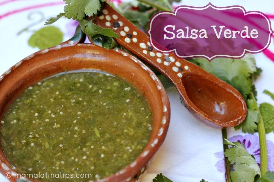

Salsa Verde

Description
Salsa verde is a tangy green sauce
Try it as the perfect companion for delicious tacos or some fried eggs at breakfast time
Ingredients
- Tomatillos
- White onion
- Garlic Clove
- Serrano chile
- Kosher Salt
- Cilantro
- Epazote
Steps
- Blanch the tomatillos and serronos in boiling water until they are tender
- Put all the ingredients into a blender and pulse until the salsa is the chunky
consistency that you desire.